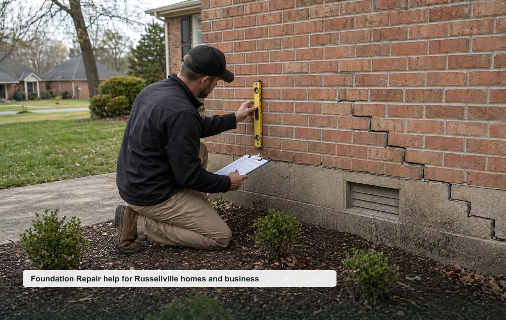

Foundation Repair
Cracks, settlement, sticking doors, uneven floors, and structural movement.
View pagefoundation repair Russellville AR
A focused local quote request website for Russellville, Pope County, and nearby communities.

Opportunity thesis
High-ticket structural leads, older housing stock, and a mid-size county market where directories and regional pages leave room for a focused local asset.
The site is built around specific high-intent pages instead of one generic homepage. That makes it easier to test rankings, route leads by job type, and pitch a local business with clear ROI.
Service cluster
Cracks, settlement, sticking doors, uneven floors, and structural movement.
View pageCrawl space supports, sagging floors, beams, joists, and moisture-related movement.
View pageBowed walls, cracking, seepage signs, and structural wall concerns.
View pageMoisture, support posts, insulation, vapor barriers, and drainage concerns.
View pageSunken slabs, porch settlement, walkways, patios, and trip hazards.
View pageWater movement around foundations, grading, downspouts, and soil issues.
View pageBuyer-intent pages
Homeowner-focused foundation repair quote requests for inspections, repairs, replacements, and planned projects in Russellville.
View pageSmall business, property manager, and light commercial foundation repair requests around Russellville and Pope County.
View pageUrgent foundation repair requests where response time, safety, access, and callback speed matter.
View pageLocal search page for nearby foundation repair requests in Russellville, Pope County, and surrounding communities.
View pageThese pages support nearby searches without claiming fake office locations.
Repeatable model
Start with tracked calls/forms, validate ranking movement, then offer a trial to the best local provider. Keep the lead flow exclusive once paid.
Planning guides
Planning guide for Russellville foundation repair quote requests.
View pagePlanning guide for Russellville foundation repair quote requests.
View pagePlanning guide for Russellville foundation repair quote requests.
View pageLocal questions
Cost depends on project size, urgency, access, materials, labor, and the final scope confirmed by the provider.
Response depends on provider availability, weather, job type, and whether the request is emergency or planned work.
Nearby requests may be routed for Dardanelle, Pottsville, Atkins and surrounding Pope County communities.
Include your city, project type, rough size, visible symptoms, timeline, and the best callback number.
Request a local quote
Include the project type, rough size, city, urgency, and best callback number.
Russellville Foundation Pros serves Russellville, Arkansas and nearby communities.